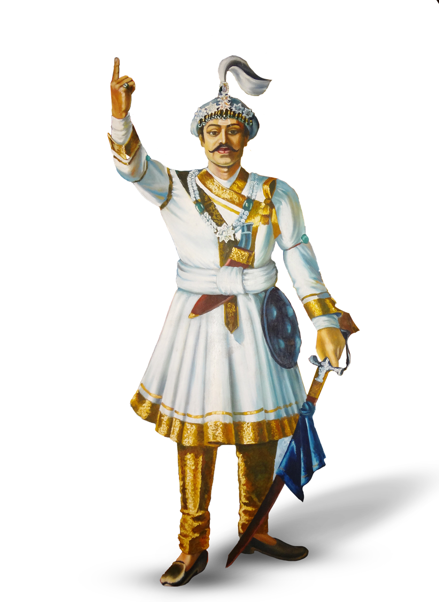

Biography
King Prithvi Narayan Shah was the first King of unified Nepal. Born in 1723, he was a visionary and influential figure in the history of Nepal. Renowned for his strategic brilliance and leadership, he united the fragmented kingdoms of the Himalayan region into a cohesive nation in the mid-18th century. His relentless efforts and military campaigns led to the creation of a strong and unified Nepal, and he became the first King of the Shah dynasty. King Prithvi Narayan Shah's legacy is deeply rooted in Nepal's history as the architect of its territorial integrity and sovereignty, making him a revered national hero and a symbol of Nepalese unity.
"Unity in diversity is Nepal's strength, and it was my vision to unite and strengthen this beautiful land."
Key Achievements
| Birth Year | 1723 |
| Reign | 1743–1775 |
| Unification | Successfully unified smaller kingdoms into Nepal |
| Legacy | Architect of Nepal's territorial integrity |